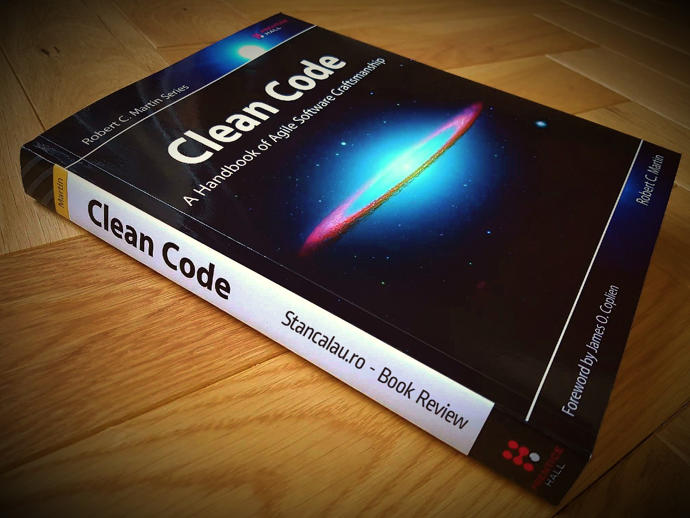

4 Regras do Projeto Simples
Logo no início de minha jornada de transição de carreira, comecei a ver muita coisa sobre desenvolvimento de software, incluindo cursos, livros, perfis em redes sociais, canais no youtube, entre outras diversas fontes. E é claro que sofri o que acredito que muitas pessoas sofram, ter muito conteúdo disponível porém sem saber como começar e pra onde ir.
Um dos livros que mais ouvi falar e que adquiri rapidamente foi o Clean Code do dignissimo uncle Bob. Este é um dos livros que grande parte da comunidade cita como sendo uma referência que deve obrigatoriamente ser lida. Na época, comecei a lê-lo mas de fato estava bem no início de tudo e não consegui entender grande parte de seu conteúdo.
Há poucos dias peguei o livro novamente, quase um ano depois da leitura inicial com um objetivo em mente: estuda-lo em detalhes absorvendo o máximo possível dos ensinamentos e utilizando cada tópico o mais rápido possível em meu dia a dia. E como criei o blog pensando principalmente em compartilhar conhecimento, vou utilizar alguns posts para falar um pouco sobre o que foi aprendido ao longo dos capítulos do livro.
Hoje vou falar um pouco sobre o capítulo 12 - Emergências, que apesar deste título aborda principalmente a definição de 4 regras simples para o desenvolvimento de um bom projeto de software. De acordo com Kent Beck, as 4 regras são as seguintes:
- Efetuar todos os testes.
- Sem duplicação de código (DRY - Don't Repeat Yourself).
- Expressar o propósito do programador.
- Minimizar o número de classes e métodos.
Agora vamos entrar um pouco mais no detalhe de cada uma dessas regras.
1) Efetuar todos os testes.
Quanto mais me aprofundo no estudo de desenvolvimento de software mais eu entendo (ou começo a entender) a necessidade da construção de testes, de maneira organizada e cobrindo o mais detalhadamente possível cada aspecto do código. A criação de um bom conjunto de testes, direciona o desenvolvimento para a construção de um software melhor, com responsabilidades bem definidas em cada um de seus componentes. Pensando no aspecto de classes por exemplo, teremos classes que em sua maioria serão pequenas e de propósito único. Um código com testes bem definidos, pode ser refatorado quando necessário, submetido aos testes novamente e se aprovado, temos a garantia que tudo está funcionando como deveria estar. Um software sem testes não serve de nada pois não temos a garantia de que o que foi escrito realmente funciona na prática. Então, o aspecto mais importante desta é regra é: teste, teste, teste e teste novamente.
2) Sem duplicação.
Essa parte, é a parte que ouvimos falar a todo momento através do famoso acrônimo DRY ou Don't Repeat Yourself ou em bom português, não se repita. É importante identificar trechos repetidos, exatamente pela repetição ser uma grande fonte de erros. Imagine um código com essa característica onde seja necessário alterar algo. Você precisaria mapear e fazer a alteração em todos os lugares de maneira correta para que tudo continue funcionando perfeitamente. Podemos ver que isso não é legal, e uncle Bob ainda se aprofunda mais, imagine que você não tenha estruturas repetidas exatamente iguais, mas similares de modo que sejam casos específicos de uma estrutura mais geral. Definindo essa estrutura mais geral como um método por exemplo, podemos observar que uma classe deixa de respeitar o principio de responsabilidade única, podemos assim, extrair a responsabilidade adicional para uma nova classe e mais ainda, essa nova classe pode ser reutilizada em outros pontos do código. Ou seja, além de eliminar uma fonte de problemas, melhoramos o nosso software.
3) Expressividade.
Primeiro uma pergunda, onde estão os maiores custos de um projeto de software? Acertou quem respondeu que é na manutenção de longo prazo. E por que isso ocorre? Bom, principalmente devido a dificuldade em entender 100% tudo que um sistema faz, cada detalhe, cada classe ou método. O que torna extremamente difícil, implementar melhorias, refatorar, escalar e até mesmo o principal que é fazer o sistema continuar funcionando corretamente. Com isso, é muito importante arquitetar bem o software, se importar em nomear bem classes, métodos e variáveis. Ao desenvolver, devemos sempre pensar que em um futuro próximo aquele ponto será revisitado por nós mesmos ou por outras pessoas e é fundamental que tudo seja entendido rapidamente para que possamos investir o tempo onde realmente importa. Aqui novamente vemos a importância dos testes, quando bem escritos, os testes tem a capacidade de explicar o que o código faz e o que devemos esperar de cada trecho o que facilita bastante o trabalho em um sistema legado. Aproveitando para lembrar a regra número um, teste, teste e teste novamente.
4) Poucas classes ou métodos.
A última mas não menos importante regra, é pensar em desenvolver poucas classes e métodos, mantendo-os enxutos respeitando principalmente o princípio da responsabilidade única. Se conseguirmos desenvolver nosso sistema dentro deste princípio, escreveremos classes que só precisarão ser alteradas por um único motivo, conseguiremos escrever testes melhores que nos conduzirão a um desenvolvimento melhor, o que nos faz entrar em um círculo virtuoso de boas práticas. Claro que é importante ressaltar que em alguns momentos este princípio pode ser quebrado mas a ideia é que mantenhamos em mente a importância desta regra e que no caso desta ser quebrada saibamos exatamente o motivo. Nas palavras de uncle Bob, "devemos pensar que nosso sistema como um todo deve ser pequeno. Logo apesar de ser imporante, devemos ser pragmáticos para não exagerar". Ou seja, além de pensar em cada classe e método não devemos perder de vista a complexidade e tamanho da aplicação como um todo.
Conclusão.
Bom pessoal, estas foram as 4 regras do projeto simples, e ao analisar cada uma delas conseguimos enxergar sua importância, principalmente com relação a testes e o quanto eles são necessários e conduzem a um melhor desenvolvimento. Pensando no livro como um todo, é um capítulo pequeno mas pesado nas informações e reflexões. Com certeza saio deste trecho um desenvolvedor melhor. Agradeço quem seguiu a leitura até aqui e em breve teremos mais resenhas sobre os demais capítulos. E de fato, assim como falaram para mim, sugiro fortemente a leitura deste livro. Não só a leitura, mas a reflexão e o principal, aplicação das ideias no dia a dia.
Um grande abraço e até o próximo post.
Rodrigo B. Medeiros
Para quem tiver interesse segue o link do livro: Clean Code